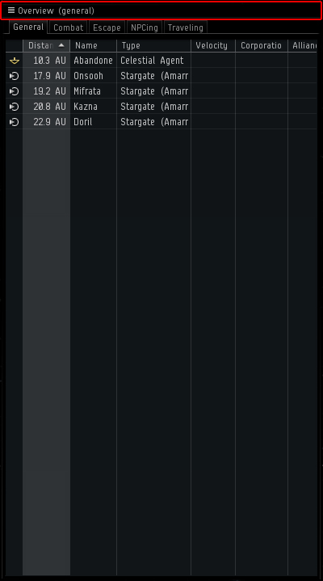
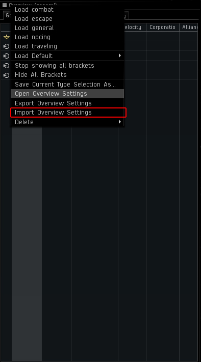
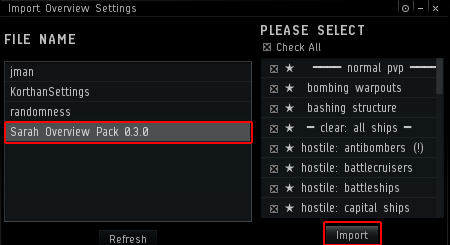
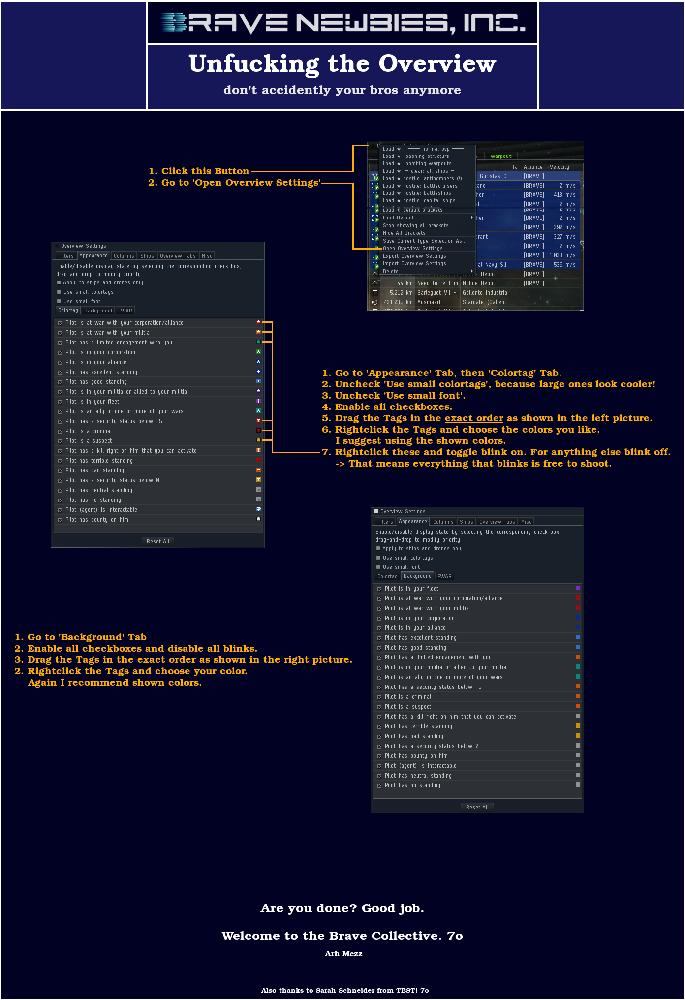

Thanks to Sarah Schneider of TEST, Fire Pixel, and Nicen Jehr
Hey everyone!
The purpose of this guide is to configure your overviews to make it easier for you to keep track of what's going on in space. EVE's overview is extremely configurable and complex. It can display a huge variety of information, the key is to tell it exactly what information you want in any given situation.
Step Zero (Optional):
If you already have Sarah's or custom presets of your own this will not overwrite them. It may get a bit crowded. Consider exporting your old settings for backup (optional), then clicking Reset All Overview Settings in Overview Settings > Misc for a fresh start before continuing.
Step One:
Download Sarah's Overview Pack and The Default Overview.
Right click links and "save as" to C:\Users\YOURNAME\Documents\EVE\Overview.
Mac users: ~/Library/Application Support/EVE Online/p_drive/User/My Documents/EVE/
Step Two:
Click on the Overview Icon.

Step Three:
Click on Import Overview Settings.

Step Four:
Select the Overview Pack you want to use and click on Import.

Step ... Rest:

For more info see
Sarah's Forum Post or
Nicen Jehr's reddit post.
Helpful Tips
- Clicking the overview icon (as in step two) will allow you to load different tab profiles. There are often custom tab presets for POS bashing, trying to loot wrecks, or doing data/relic sites. All you have to do is load them when needed.
- I recommend leaving most of your tabs as is, and only loading different profiles into tabs 3 and 4, because you always want an easy and realiable way to see enemies, warp out options, and stations/gates.
- If you are in a combat situation with unwanted things on an overview, and you don't have a more appropriate tab configured, just right click and 'Remove (or add) xxxx from overview'. You can always reload whatever preset you were using after the combat situation ends to get them back. The last thing you want to do is have to scroll past a hundred wrecks or drones to find one of twenty targets.